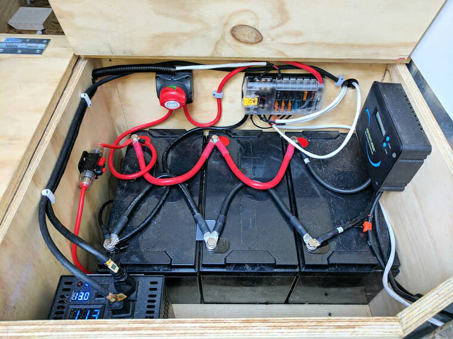
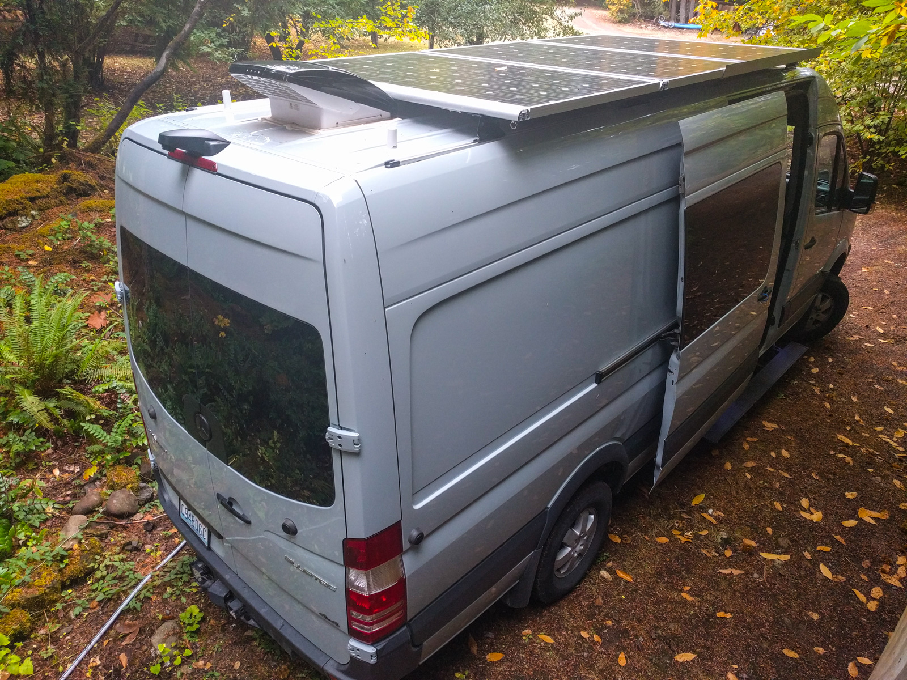

USE THE SUN! ALL ABOUT SOLAR & BATTERY
What kind of battery do I need for my camper van? The answer to this question depends on several factors. After reading this post, you’ll be able to choose the best battery for your camper van build. What do you use your electrical system for? Do you plan to spend a lot of time off grid, or will you be mostly plugged in to shore power? Will you be doing a lot of cooking with electricity? Running an air conditioning unit, some fans or both? How is your electrical system designed? Are most of your appliances running off 12/24 volt DC power, or are you relying heavily on an inverter to convert 12/24 volt power to AC 110/240? How are you charging your battery? Are you using solar panels, a relay or plugging in to shore power to charge, or, like most people, a combination? Read on to learn about the different types of batteries, sizes, uses and how to calculate battery size for your unique power needs.
It’s a good idea to think about how much electricity you’ll use when deciding how many solar panels you need and how big your batteries should be. This can get a bit complicated, especially since there’s a lot you just don’t know about your usage if you’ve never lived in a van before. Mediavine But, if you want to make sure you have enough electricity to meet your daily usage while also not paying for more than you need, then going through the exercise of sizing your system is the best thing to do.